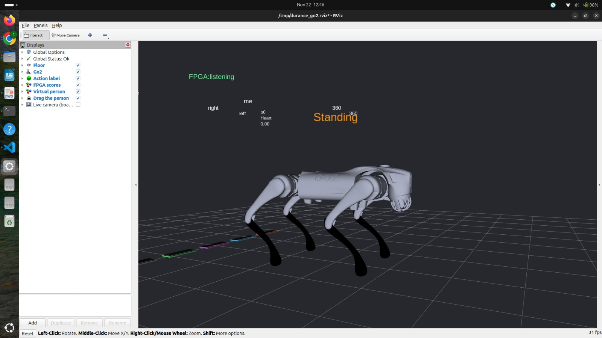
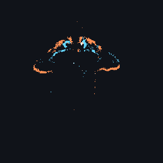

Berlin Robotics Hackathon
A reflex for
the Go2 X.
An event camera sees the gesture. A spiking network on the Kria classifies it. The Go2 responds through ROS 2.
Explore the pipelineFrom recording to robot
How we built on the organizers’ Motion Buddy and RIVER SDK examples.
Cued recording and automatic labels
Organizers’ example
Motion Buddy supplied labeled clips. The RIVER capture tool recorded new samples with manual start and stop.
Wacky Wavers
Recorded 2,442 clips from 11 people for heart, left turn, right turn and natural no-action motion. Recording cues assigned the labels.
We reserved people for validation and test so the model was evaluated on unfamiliar performers. Watch sample recordings.
40×40 input with consistent turn labels
Organizers’ example
The notebook averaged ON and OFF events into a 32×32 grid and used random shifts of up to two pixels during training.
Wacky Wavers
Cut takes into one-second clips, filtered low-quality windows, and prepared 40×40 inputs. Mirroring swapped the left and right turn labels.
The 40×40 grid matches the board’s downsampling by eight. Mirroring preserved the meaning of each turn.
Training for a continuous stream
Organizers’ example
A five-layer spiking CNN trained for ten epochs and scored one-second clips by counting output spikes.
Wacky Wavers
Selected the board-compatible nb40 SNN, added 40 warm-up frames before scoring each training clip, and penalized excess spiking.
The 40 context frames let neuron state build before scoring. Quiet-scene examples discouraged idle firing, and the spike penalty cut synaptic operations from 1.75 million to 59,000 per 10 ms step.
8-bit training matched to firmware
Organizers’ example
The notebook exported a model graph and parameters in an 8-bit Q1.7 weight format.
Wacky Wavers
Used quantization-aware training with the nb40 firmware’s Q2.6 weights and biases, then exported the board’s integer weights.
Training applied the board’s 8-bit quantization throughout learning. The firmware reads the exported weight integers divided by 64.
Matching the board to the training input
Organizers’ example
Generate Kria firmware from the model graph and load it with matching weights and camera settings.
Wacky Wavers
Matched the 40×40 bitstream and the camera scaling, replayed held-out clips through the FPGA, and mapped the outputs to ROS 2 commands.
The Go2 responds with a finger heart or a closed-loop turn. The idle output leaves it stationary. See how we checked board inference.
Event-camera clips
One-second recordings from the team’s Session 20 dataset.
- Brighter (ON)
- Darker (OFF)
- Both
Press play on a clip to loop it. Each preview frame shows 50 ms of activity on the 320×320 sensor. See the heart gesture.
PyTorch vs. board inference
We replayed recorded 10 ms event frames through a fixed-point PyTorch simulation and the Kria KV260 using FPGAClient.
Board state carried over
74.0%
matching frame-level spike outputs
9 of 10 clip predictions matched
Both started from zero
86.0%
matching frame-level spike outputs
10 of 10 clip predictions matched
Two 10-clip Motion Buddy diagnostics. Spike agreement counts matching 0/1 outputs for each frame and class.
Starting state
Neurons carry charge from earlier frames. On the board, that state persisted across clips and TCP reconnects, so the same input could produce a different spike pattern. Restarting SPLEAT before each clip gave both sides a zero start.
Rounding
Near the firing threshold, one fixed-point step can move a spike to the next frame. We observed a one-frame delay in a separate replay. A shift within a clip can change frame agreement while leaving the winning spike total unchanged.
Measured on the Kria
FPGA replay of 360 clips from two held-out performers.
- Clip classification
- 99.2%
- Correct gesture triggers
- 98.3%
- False triggers on no-action clips
- 1.4%
- Median FPGA time per frame
- 0.15 ms
Original vs. updated Motion Buddy model. The report lists 60.5% for the original FPGA model. The updated model reached 79.7% on the validation session and 75.9% across three held-out test sessions.
Model improvement tests
Median FPGA processing time per frame
Fewer spikes meant fewer synaptic operations per frame. Gesture-to-motion latency still needs a live measurement.
Classification accuracy in a separate 40×40 FPGA replay check
The camera sent block sums. Matching those sums to the means used in training restored accuracy.
8-bit test accuracy in a Motion Buddy software experiment from the team report
Quantization-aware training applied the 8-bit rounding during learning.
Simulation and recording
See the recorded camera input, the simulator’s output spikes, and the Go2 view in RViz.

Heart gesture
The event-camera cue for the Go2’s finger-heart response.
